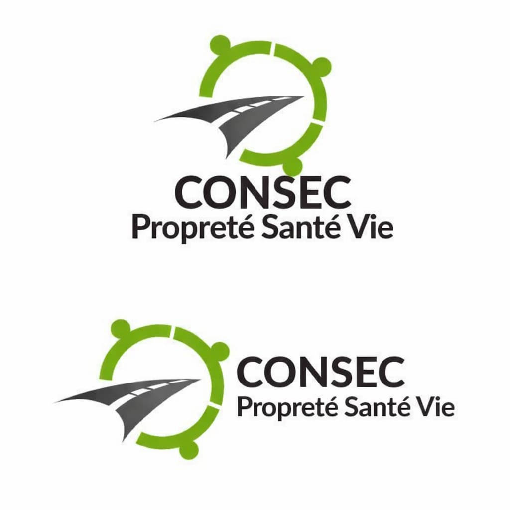
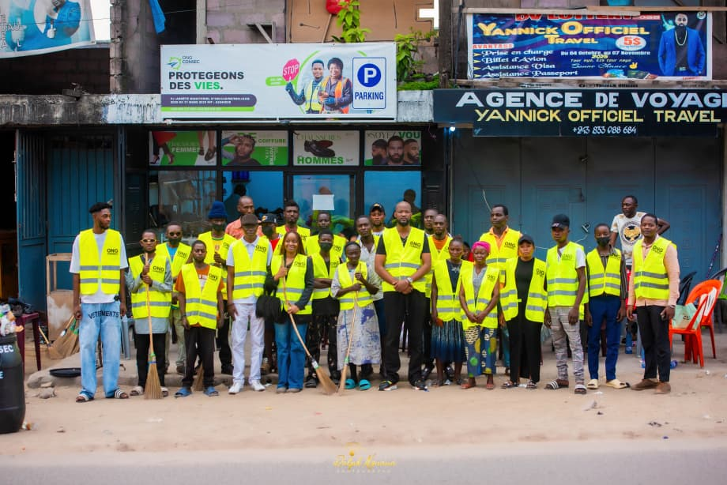
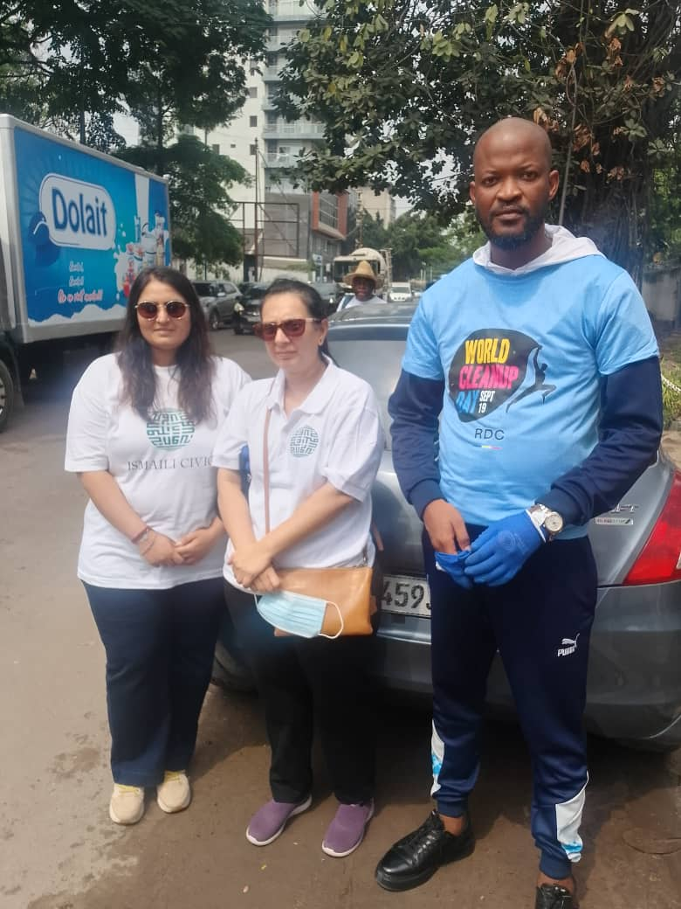
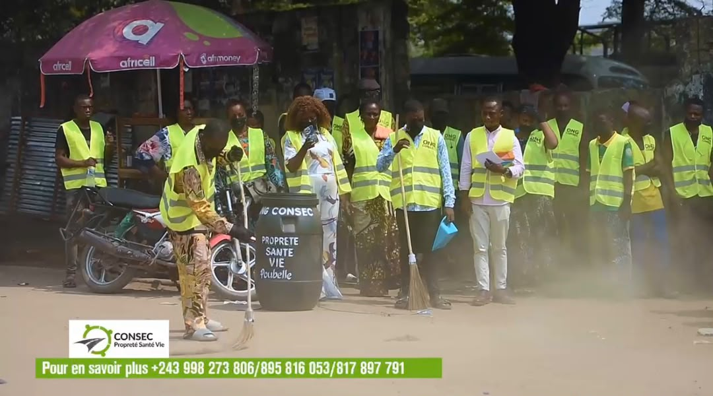

Assainissement
des voiries
Contribuer à la propreté des voiries urbaines et à un cadre de vie plus agréable.

Chaque jour, CONSEC s’engage pour un environnement sain, des déplacements plus sûrs et un espace urbain mieux organisé.

CONSEC œuvre pour le développement urbain de Kinshasa en plaçant l’hygiène publique, la sécurité et la fluidité de la circulation au cœur de ses missions.
Retrouvez-nous à Lemba ↗
De la voirie aux déplacements quotidiens, nous intervenons là où la ville en a besoin.

Contribuer à la propreté des voiries urbaines et à un cadre de vie plus agréable.
Entretenir les caniveaux pour faciliter l’écoulement des eaux dans la ville.
Assurer la collecte, le tri et l’évacuation des déchets pour un environnement sain.
Sécuriser et réguler la circulation routière des piétons dans l’espace urbain.
Organiser les parkings de motos-taxis pour une mobilité urbaine plus fluide.
Des collaborations institutionnelles et techniques au service de nos missions.
Régie d’assainissement de Kinshasa
Kinshasa
CONSEC finance ses actions sur fonds propres, alimentés par une activité commerciale spécialisée dans la vente de chaussures et de baskets.
FONDS PROPRESCHAUSSURES & BASKETSVous souhaitez échanger sur nos missions ou une collaboration ? Retrouvez-nous à notre siège à Kinshasa.
N°20 Avenue Universitaire
Quartier Righini, Commune de Lemba
Kinshasa, République démocratique du Congo